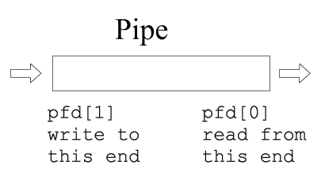

Chapter 6: Pipes
Overview
This chapter introduces pipes, a fundamental inter-process communication (IPC) mechanism in Unix-based operating systems. Pipes allow processes to communicate by passing data from one process’s output to another’s input. They are widely used in command-line environments and systems programming to create modular, efficient workflows.
Key topics covered in this chapter include:
- What pipes are and how they work
- Anonymous vs. named pipes (FIFOs)
- Creating and using pipes in the shell
- Using pipes in C programs
- Synchronization and limitations
- Practical examples and debugging
What Are Pipes?
A pipe is a unidirectional communication channel that connects the output of one process to the input of another. Pipes operate using file descriptors and allow for streaming data between processes.

Characteristics of Pipes:
- Unidirectional (one-way data flow)
- Use standard file descriptors (read/write)
- Temporary and exist only while the processes are alive (anonymous)
Anonymous Pipes in the Shell
Anonymous pipes are created implicitly using the pipe (|) operator in the shell.
Example: Piping Commands
ls -l | grep ".txt"
ls -l writes output to the pipe.
- grep ".txt" reads input from the pipe.
Anonymous Pipes in C
In C, you can create an anonymous pipe using the pipe() system call. The pipe is represented by two file descriptors:
pipefd[0]: Read endpipefd[1]: Write end
Example: Basic Pipe Communication
#include <stdio.h>
#include <unistd.h>
int main() {
int pipefd[2];
char buffer[20];
pipe(pipefd);
write(pipefd[1], "Hello, pipe!", 12);
read(pipefd[0], buffer, 12);
printf("Received: %s\n", buffer);
return 0;
}

Parent-Child Communication via Pipes
Pipes are often used between a parent and child process created using fork().
Example: Parent writes, child reads
#include <stdio.h>
#include <unistd.h>
#include <string.h>
int main() {
int pipefd[2];
pipe(pipefd);
pid_t pid = fork();
if (pid == 0) { // Child
close(pipefd[1]);
char msg[20];
read(pipefd[0], msg, sizeof(msg));
printf("Child received: %s\n", msg);
} else { // Parent
close(pipefd[0]);
char *msg = "Data from parent";
write(pipefd[1], msg, strlen(msg) + 1);
}
return 0;
}
Named Pipes (FIFOs)
Unlike anonymous pipes, named pipes (also known as FIFOs) exist as special files in the filesystem and allow unrelated processes to communicate.
Creating a FIFO
mkfifo mypipe
Using a FIFO
echo "Message" > mypipe &
cat mypipe
In C:
#include <fcntl.h>
#include <sys/stat.h>
#include <unistd.h>
int main() {
mkfifo("mypipe", 0666);
int fd = open("mypipe", O_WRONLY);
write(fd, "Hello FIFO", 10);
close(fd);
return 0;
}
Synchronization and Limitations
- Pipes are blocking by default:
read()waits for data,write()waits for a reader. - Pipes have a limited buffer size: Writing too much without reading may block.
- Pipes are unidirectional: Use two pipes for bidirectional communication.
Interactive Quiz
Test your understanding of pipes:
-
What does the pipe (
|) operator do in a Unix shell?A. Terminates a process
B. Redirects output to a file
C. Sends output of one command as input to another
Show Answer
The correct answer is C. The pipe operator connects the stdout of one command to the stdin of the next.
-
Which system call creates an anonymous pipe in C?
A.
open()
B.pipe()
C.dup2()
Show Answer
The correct answer is B. The pipe() system call creates a unidirectional data channel.
-
What is the main difference between a pipe and a FIFO?
A. Pipes are bidirectional
B. FIFOs exist in the file system and can be used by unrelated processes
C. Pipes allow data to persist after processes terminate
Show Answer
The correct answer is B. FIFOs are named files that persist and can be used by unrelated processes.
Summary
- Pipes allow simple, unidirectional communication between processes.
- Anonymous pipes are used between related processes and created with
pipe(). - Named pipes (FIFOs) can connect unrelated processes and exist in the file system.
- Pipes are commonly used for parent-child communication and shell scripting.
In the next chapter, we will explore Shared Memory, a faster and more powerful IPC method that allows multiple processes to access common memory regions.
This chapter is based on material from "Advanced Programming in the UNIX Environment, Third Edition, by W. Richard Stevens and Stephen A. Rago, 2013."